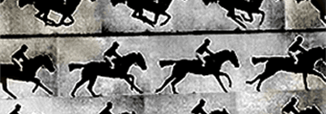

CSS Animated Slideshows
Revolving image galleries made with only CSS animations? Get out! Feast your eyes on some new wave CSS goodness.
View the demo...
Fun with HTML Form Validation Styles

HTML form validation is evolving in a big way. In this little ditty I lay out a process for making browser generated validation errors super sexy!
Read it...
CSS Animated Sprites

Wait, did I just recreate animated gifs using only CSS animations? I sure as hell did. Might not be the most practical thing, but it sure is cool!
View the demo...
A Small Redesign with a Little Sugar

Side projects can be great opportunities to flex some muscle on new skills. In the article I discuss doing just that with a side project in need of a facelift.
Read it...